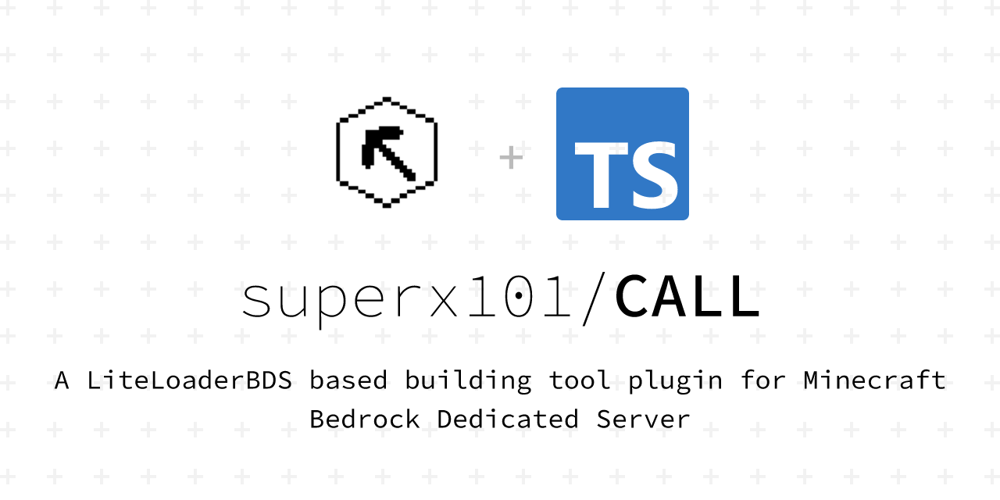
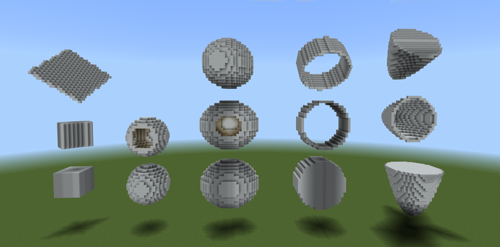

插件介绍
简介
Construct Assistant for LiteLoaderBDS, 简称CALL、建造助手，是针对基岩版服务器（BDS）的辅助建造工具，且提供API支持其他插件开发者拓展CALL的功能。
为什么选择CALL？
-
指令操作
CALL中所有操作均支持指令，因此您可以使用命令方块为某一玩家执行CALL操作，例:
/execute @p ~ ~ ~ /call menu -
用户体验
CALL致力于提升用户体验，所有基础操作均可使用GUI(图形化界面)点击完成，不需要过多学习成本。
对于指令，本插件提供了缺省值和简化版指令, 例如指令:/call area start ~ ~ ~可简化为/ca ar a
您也可以将指令绑定到快捷键，一键执行，更加方便 -
导入导出
支持在服务端从外部导入结构文件，并将保存的结构导出为结构文件 -
多人协作
您可与其他玩家共享保存的结构 -
跨存档
复制、保存的结构可跨存档使用 -
自定义权限
后台管理员可自定义哪些玩家可以使用CALL -
大范围
CALL使用了一种异步等待方式来避免因区块未加载而操作失败。理论上可操作无限大区域（无论区块是否已加载）。为保证稳定性，CALL限定了单个区域最大范围为 64000 * 320 * 64000 -
第三方支持
CALL支持其他开发者编写拓展功能的插件，您可安装第三方插件来获取更多的功能 -
开源免费
本插件使用GPL-3.0协议，完全开源免费
项目地址：https://github.com/superx101/CALL (首次编写BDS插件，大佬轻喷)
Bug反馈与建议：691552572 -
自动更新
自动下载、自动安装、自动重载插件
自1.0.0版本后CALL可在配置中开启自动更新，或输入后台指令call update半自动更新 -
文档教程
CALL为您提供了文档，记录了较为详细的插件安装、使用方法以及第三方插件开发教程
功能
形状
当前版本中自带的形状如下： 